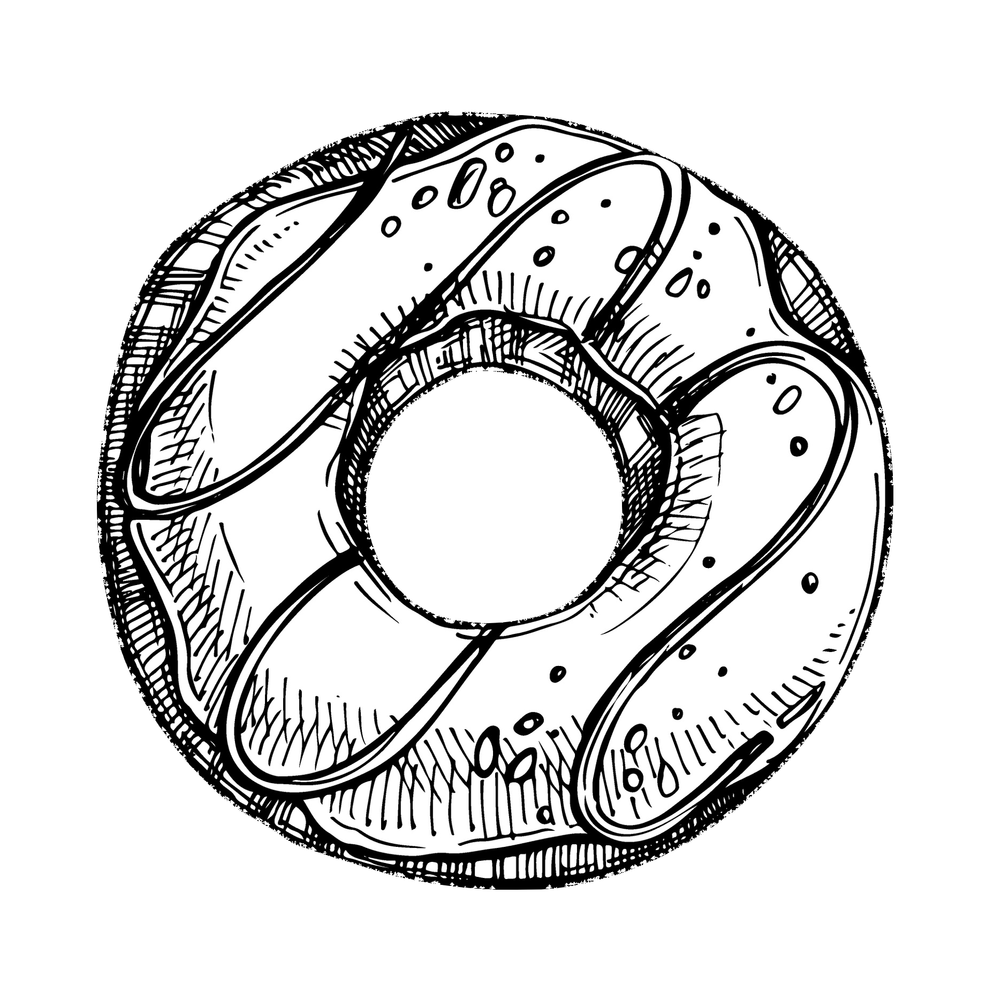
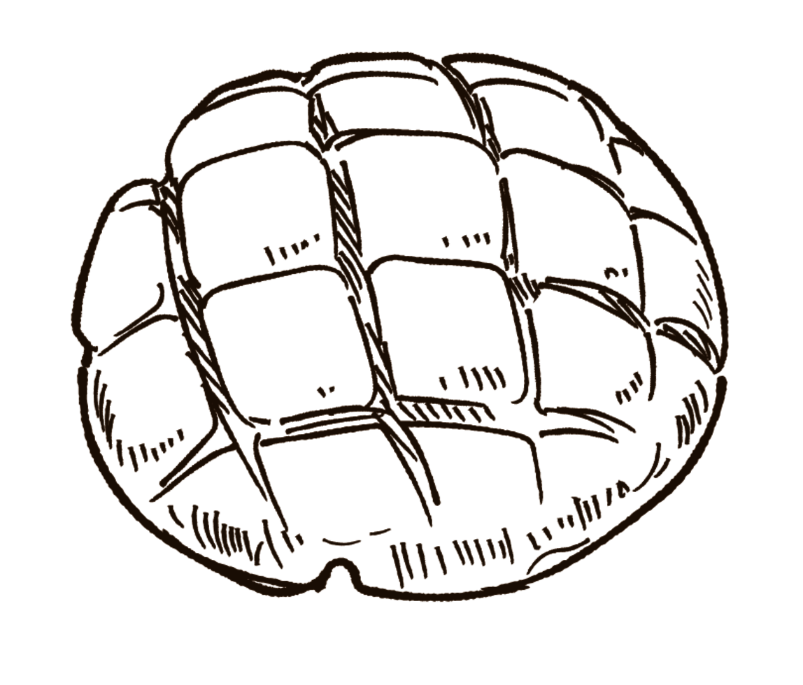

Donut Recipe
Ingredients
- 1 cup of whole milk
- 2 teaspoons of active dry yeast
- 1/2 cup of granulated sugar
- 2 eggs
- 6 tablespoons of melted unsalted butter
- 12 teaspoons of vanilla extract
- 1/4 teaspoon of ground nutmeg
- 1/2 teaspoon of salt
- 4 cups of all-purpose flour
- 2 quarts of vegetable oil
- 2 cups of confectioner's sugar
- 1/3 cup of heavy cream
Instructions
- Whisk yeast and one tablespoon of sugar into the warm milk. Let rest for 10 minutes.
- Add remaining sugar, eggs, butter, vanilla, nutmeg, salt, and 2 cups of flour. Knead until the dough comes together.
- Place the dough into a greased bowl and let proof for 2 hours or until doubled in size.
- Punch down dough to release the air and place on a lightly floured surface. Roll the rough out until it is 1/2 inch thick.
- Use a donut cutter to cut dough into donut shapes. Place onto baking sheets with parchment paper and let rest for 30 minutes.
- Pour oil into a pot with an oil thermometer until it is 375 degrees F. Fry donuts 2 at a time for 1 minute on each side.
- Whisk confectioner's sugar, heavy cream, and vanilla extract together to make the donut glaze.
- Dip donuts in glaze on both sides and let set for 20 minutes.
- Enjoy!
Donuts are a great sweet treat to reward yourself after a long hard day's work! You can sprinkle them with various toppings like sprinkles, freeze dried fruits, flavored glazes, and more!
Donuts can also be enjoyed with a scoop of your favorite ice cream flavor, or with a nice bitter coffee drink.
Croissant Recipe
Ingredients
- 1/4 cup of unsalted butter
- 4 cups of all-purpose flour
- 1/4 cup of granulated sugar
- 2 teaspoons of salt
- 1 tablespoon of active dry yeast
- 1 and 1/2 cups of whole milk
- 1 egg
Instructions
- Cut butter into 1 tablespoon pieces. Add butter, flour, sugar, salt, and yeast into an electric mixer and combine ingredients.
- Pour in the milk with the mixer running and beat the dough for 5 minutes. Remove dough from mixer and work into a ball.
- Flatten dough onto baking sheet and place in the refrigerator to rest for 30 minutes.
- Remove dough from the refrigerator and flatten out the dough with your hands. Place dough back onto the baking sheet and place in the refrigerator overnight.
- Beat butter and flour together until combined. Transfer mixture to a baking mat and smooth into a 7 x 10" rectangle. Place baking sheet in the refrigerator to chill for 30 minutes.
- Place dough layer onto counter. Place butter layer in the center of the dough layer. Fold each end of the dough over the butter layer.
- Roll the dough into a 10 x 20" rectangle. Make sure the dough and butter layers stay chilled. If not, refrigerate until chilled.
- Repeat lamination process three times and place into refrigerator overnight.
- Remove dough from the refrigerator. Slice the dough in half twice, creating 16 triangles. Using a rolling pin, gently roll the triangles to not flatten the layers.
- Preheat oven to 400 degrees F. Whisk egg and whole milk together to create egg wash. Brush egg wash on top of the croissants.
- Bake croissants for 20 minutes or until golden brown. Remove after they are done baking.
- Enjoy!
Croissants are a challenging bread to bake- even professionals have trouble with them sometimes! The trick to making croissants is to make sure that all the layers are cold.
When rolling, always be gentle so that the layers are allowed to grow. If you're struggling, you can choose to use premade puff pastry instead of going through the lamination process.
This will be easier, but also doesn't have as defined layers. Croissants go great with chocolate sauce, or slice them open and add ham and egg inside!

Melonpan Recipe
Ingredients
- 300 grams of bread flour
- 40 grams of cubed butter
- 25 grams of sugar
- 4 grams of salt
- 160 ml of whole milk
- 1 egg
- 3 grams of dry yeast
- 240 grams of all-purpose flour
- 1 teaspoon of baking powder
- 80 grams of butter
- 80 grams of sugar
- 1 egg
- 1/2 teaspoon of vanilla extract
- granulated sugar to taste
Instructions
- To start out, the top half of the ingredients list is for the bread dough, while the second half is for the cookie dough.
- Make the cookie dough by beating butter and sugar together. Add the egg and vanilla essence and mix until combined.
- Add flour and baking powder into the mixture. Once the mixture is combined, divide the cookie dough into 8 balls and place in the refrigerator.
- Make the bread dough by combining the egg, yeast, milk, and sugar in a small bowl. Combine the flour and salt in a large bowl.
- Make a well in the center of the flour and add the wet ingredients. Stir to create a soft dough.
- Knead dough for 10 minutes or until smooth and elastic. Add chopped butter and knead until butter is integrated.
- Place the dough in a greased bowl and let proof for one hour or until doubled in size.
- Divide bread dough into 8 balls and knead until smooth.
- Roll out the cookie dough until it is flat. Place one bread dough on top of one cookie dough ball and wrap together with plastic wrap.
- Take off the plastic wrap and score the cookie dough surface diagonally. Sprinkle with granulated sugar.
- Repeat this step for all 8 rolls. Place on an oven tray and cover with damp cloth. Let proof for 40 minutes or until doubled in size.
- Preheat oven to 356 degrees F and bake for 15 minutes.
- Enjoy!
Melon pan is a popular bread in east Asian countries, where they're popular due to their melon-shaped appearance and sweet flavor.
The bread has a sweet crackling on top of it which is scored to give the impression of a melon. While they take more work to make than a white bread, their unique appearance is bound to be popular.
If you ever need to impress someone with your baking skills, try bringing them some melon pan to eat!